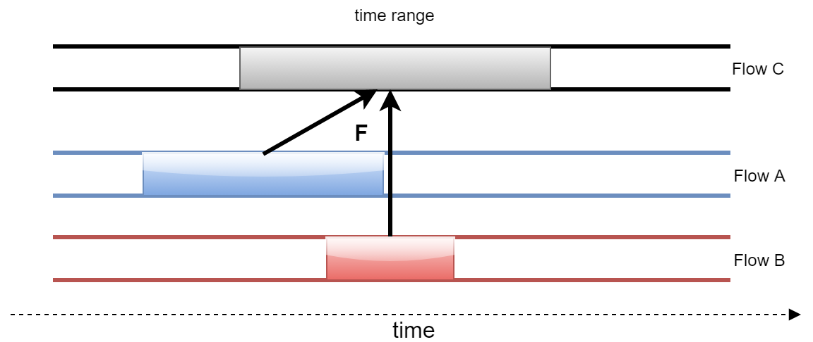

Extension – Ancestry
Ancestry is about providing the information needed to answer the question: "For a piece of content, which content was used to produce it?"
Content (and its expressions) are modelled by Sources and Flows and so ancestry is described in terms of relationships between these entities. Use cases might require different levels of fidelity. For example, the following details might be required in addition to a simple relationship between entities: qualification of an ancestry relationship with a time range over which it applies; indication of whether a transform from one entity to another was lossy or lossless; recording of changes in ancestry against a timeline.
To fully describe content (such as where it came from and how it was made) would require additional relationships that go beyond ancestry. These relationships would probably need to involve entities not included in the identity and timing model, such as Person, Programme or Contract.
Flow Ancestry
Flow ancestry explains how one Flow was created from one or more other Flows.
The illustrated example shows how Flow ancestry might be analysed:
- an identified time range of
FlowC was created from identified time ranges ofFlowA andFlowB. - F is the function describing how the input data was transformed to produce the data for
FlowC. F could be as simple as a statement that the output "was derived from" the input.

This is clearly a simplification. In an ideal world all information about how content was derived from other content would be retained. However, the cost of retaining and processing is likely to exceed the benefits. For example, for Flow ancestry, the full details of the function F and how it was applied to each input Data Object could be retained but for many scenarios this level of detail will not be required.
Source Ancestry
Source ancestry explains how one piece of time-based content was created from one or more other pieces of time-based content. Simplified ancestry relationships can be constructed as for Flows (but using Sources in place of Flows). These ancestry relationships then apply to all Flows that belong to each of the Sources.
Source ancestry might be less specific / detailed than Flow ancestry to allow for variations in the Data Objects and Time Values of the member Flows.
Ancestry Examples
Below are examples of ancestry relationships specified using a simple notation. The notation is intended to identify the key parts of the relationship and not suggest an implementation.
- A complex set of operations involving
SourceA, B and C resulted inSourceD. The details of the operations are ultimately not important at the edges of the production process and therefore the relationship is recorded as: {Source D} was derived from {Source A}, {Source B} and {Source C} FlowA was time shifted for use in a composition, resulting inFlowB: {Flow B} is {Flow A} time shifted by T- The
Sourcerelationship follows from the aboveFlowrelationship: {Source B} is {Source A} time shifted by T FlowB is a transcode ofFlowA. The intermediate decoded version ofFlowA is not recorded in the relationship: {Flow B} is a transcode of {Flow A}FlowB is a lossy transcode of anotherFlowin the sameSource, resulting in a new generation number: {Flow B} generation number is 2. In this example the input in the ancestry relationship is omitted – a generation number simply records how many lossy encodes were used to produce the output (FlowB).- A time range of
SourceA was converted to monochrome video to produce a time range inSourceB: {Source B, [Tb1, Tb2]} is {Source A, [Ta1, Ta2]} converted to monochrome - A time range of
SourceA andSourceB were mixed together to produced a time range inSourceC: {Source C, [Tc1, Tc2]} is a mix of ({Source A, [Ta1, Ta2]} and {Source B, [Tb1, Tb2]}) SourceC switches betweenSourceA andSourceB. An ancestry relationship is recorded for eachTime Valueor time range: {Source C, [Tc1, Tc2]} is {Source A, [Ta1, Ta2]}, {Source C, [Tc3]} is {Source B, [Tb3]}, {Source C, [Tc4]} is {Source A, [Ta4]}, etc.